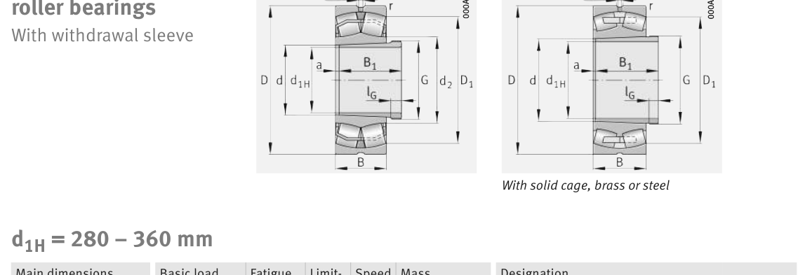

Original catalogue drawing - FAG Schaeffler HR 1, page 782

Scanned from the manufacturer catalogue page listing this part number. All part numbers printed on that table share the same drawing.
Scale cross-section
Blue = inner / outer ring, yellow = rolling element. Drawn to scale from this part's own
dimensions for selection reference only - not a manufacturing or assembly drawing.
Dimension table (mm / inch)
Symbol
Dimension
mm
inch
d
Bore diameter
300
11.811
D
Outside diameter
500
19.685
B
Inner-ring / bearing width
200
7.874
r
Chamfer (min)
5
0.1969
Notes
Weights are given in kg. Load ratings are shown in both the original catalogue units and the converted value (1 N = 0.2248 lbf). Data is provided for selection reference only - confirm against the latest official catalogue before ordering.
Main dimensions
Bore d (mm)
300
Outside dia. D (mm)
500
Width B (mm)
200
Inner-ring shoulder dia. D1 (mm)
422.8
Load ratings & speeds
Basic dynamic load rating Cr (lbs)
887995
Basic static load rating Cor (lbs)
1438777
Basic dynamic load rating Cr (N)
3.95e+06
Basic static load rating C0r (N)
6.4e+06
Fatigue limit load Cur (N)
485000
Factor e
0.39
Factor Y0
1.68
Limiting speed nG (rpm)
1,100
Effective load centre a (mm)
18
Weight
Weight (kg)
161.0
Mounting dimensions (fillets / shoulders)
Housing fillet r max (mm)
5
Shaft shoulder da (mm)
320
Housing shoulder Da (mm)
480
Housing fillet ra max (mm)
4
Bearing life (ISO 281 basic rating life)
C / P
Equivalent load P (N)
L10 (106 rev)
L10h at 300 rpm
4
987,500
102
5,644
6
658,333
392
21,805
8
493,750
1,024
56,889
10
395,000
2,154
119,691
15
263,333
8,323
462,415
Basic rating life per ISO 281: L10 = (C/P)10/3 with C = 3,950,000 N. Hours = L10 x 106 / (60n). Life-modification factors for lubrication, contamination and temperature (aISO) are not included.
Source & traceability
Brand
FAG
Source catalogue
FAG / Schaeffler Rolling Bearings HR 1
Catalogue page
p.782 (dimensions)
Load ratings in newtons, fatigue limit load Cur, limiting speed nG and reference speed nB.
Send us the quantity you need and we will come back with price and
lead time, normally within 24 hours. Equivalent parts from other brands can be quoted at the same time.